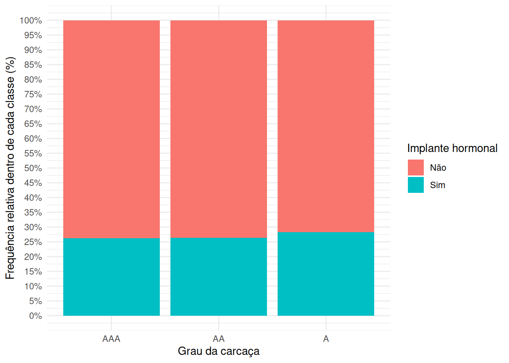

Relatório do segundo treinamento onde foi apresentado como importar dados e manipulá-los no R, bem como as principais estatísticas descritivas univariadas e multivariadas.
No treinamento anteriormente estudamos como avaliar o comportamento de uma variável isoladamente, por meio de medidas de posição, dispersão e forma. Agora, nesse treinamento, iremos avaliar o comportamento conjunto de duas variáveis, explorando suas relações, associações e dependências. Ou seja, diferente da análise univariada, aqui investigamos como duas variáveis variam conjuntamente.
Didaticamente, tentaremos separar o conteúdo em dois tipos de situações:
quando ambas as variáveis são qualitativas (ou tratadas como qualitativas);
quando ambas as variáveis são quantitativas (ou tratadas como quantitativas).
1.1 Tabelas de distribuição conjunta de frequências
Considere duas variáveis qualitativas, \(X\) e \(Y\). Quando usamos tabelas de distribuição conjunta de frequências (tabela de contingência ou tabela de classificação cruzada), buscamos calcular para cada nível (categoria) de \(X\), qual a frequência observada em \(Y\).
Matematicamente, essa tabela será definida como uma matriz da seguinte forma:
a tabela de valores será uma matriz \(r \times j\), em que \(r\) é o número de categorias em \(X\) e representa o número de linhas da tabela, enquanto, \(j\) é o número de categorias em \(Y\) e representa o número de colunas da tabela;
cada célula da tabela (cada valor) será representado por \(n_{is}\), que representa o número de observações que apresentaram categoria \(i\) de \(X\) e a categoria \(s\) de \(Y\) (\(i=1,2,...,r\) e \(s=1,2,...,j\));
além disso, caso a tabela apresente totais marginais, teremos a adição de uma última linha de frequências totais em cada categoria de \(Y\) (representado por \(n_{.s}\)) e a adição de uma última coluna de frequências totais em cada categoria de \(X\) (representado por \(n_{i.}\)), sendo que a última célula da coluna e linha de totais representará nosso \(n\) amostral (o número total de observações).
Ou seja, teremos uma tabela na seguinte forma:
\(Y_1\)
\(Y_2\)
…
\(Y_j\)
Total
\(X_1\)
\(n_{11}\)
\(n_{12}\)
…
\(n_{1j}\)
\(n_{1.}\)
\(X_2\)
\(n_{21}\)
\(n_{22}\)
…
\(n_{2j}\)
\(n_{2.}\)
…
…
…
…
…
…
\(X_r\)
\(n_{r1}\)
\(n_{r2}\)
…
\(n_{rj}\)
\(n_{r.}\)
Total
\(n_{.1}\)
\(n_{.2}\)
…
\(n_{.j}\)
\(n\)
Nessa situação de tabela de contingência com totais marginais, teremos as frequências conjuntas (\(n_{is}=\{X=X_i, Y=Y_s\}\)) e as frequências marginais (\(n_{i.} = \sum_{s=1}^j n_{is}\) e \(n_{.s} = \sum_{i=1}^r n_{is}\)). Entretanto, outra forma de apresentar esses dados seria ao invés de usar frequências absolutas se usassemos frequências relativas. Nesse caso, para as frequências conjuntas calculamos \(f_{is}=n_{is}/n\) e para as frequências maginais calculamos \(f_{i.}=n_{i.}/n\) e \(f_{.s}=n_{.s}/n\).
Para a tabela de contingência usando frequências relativas, caso a nossa amostragem seja representativa dessa variação conjunta das variáveis \(X\) e \(Y\) na nossa população em estudo, podemos interpretá-la como probabilidades empíricas, de modo que:
\(f_{is}=\frac{n_{is}}{n} \approx P(X=X_i, Y=Y_s)\) é a probabilidade conjunta, ou seja, a probabilidade de uma observação ser da categoria \(i\) em \(X\) e da categoria \(s\) em \(Y\);
\(f_{i.}=\frac{n_{i.}}{n} \approx P(X=X_i)\) e \(f_{.s}=\frac{n_{.s}}{n} \approx P(Y=Y_s)\) são as probabilidades marginais, ou seja, a probabilidade de uma observação ser da categoria \(i\) de \(X\) e de qualquer outra categoria de \(Y\), ou o contrário; e
\(\frac{f_{is}}{f_{i.}}=\frac{n_{is}}{n_{i.}} \approx P(Y=Y_s | X=X_i)\) e \(\frac{f_{is}}{f_{.s}}=\frac{n_{is}}{n_{.s}} \approx P(X=X_i|Y=Y_s)\) são as probabilidades condicionais, ou seja, a probabilidade de uma observação ser da categoria \(s\) em \(Y\) considerando que eu já sei que ela é da categoria \(i\) em \(X\) no primeiro caso, e a probabilidade de uma observação ser da categoria \(i\) em \(X\) considerando que eu já sei que ela é da categoria \(s\) em \(Y\).
Essas probabilidades empíricas serão a base para as métricas de associação e dependência que usaremos no teste \(\chi^2\) de independência.
No R, tabelas de contingência podem ser obtidas usando table ou xtabs:
Tabela de contingência das frequência relativas (%)
Implante Hormonal
Não
Sim
Total
Grau
AAA
24.85
8.83
33.68
AA
41.89
14.99
56.88
A
6.78
2.67
9.45
Total
73.51
26.49
100.00
No xtabs, o principal ganho é que você consegue criar tabelas de frequências com mais de duas dimensões:
Mostrar código
tab_multi_dim <-xtabs(~ grade + implant + sex, data = beef_ultra)addmargins( tab_multi_dim[,,"Macho"],FUN =list(Total = sum),quiet =TRUE) %>%kable(caption ="Tab. de contingência dos machos") %>%add_header_above(c(" "=1, "Implante Hormonal"=3)) %>%pack_rows(index =c("Grau"=3))
Tab. de contingência dos machos
Implante Hormonal
Não
Sim
Total
Grau
AAA
57
43
100
AA
121
64
185
A
18
11
29
Total
196
118
314
Mostrar código
addmargins( tab_multi_dim[,,"Fêmea"],FUN =list(Total = sum),quiet =TRUE) %>%kable(caption ="Tab. de contingência das fêmeas") %>%add_header_above(c(" "=1, "Implante Hormonal"=3)) %>%pack_rows(index =c("Grau"=3))
Tab. de contingência das fêmeas
Implante Hormonal
Não
Sim
Total
Grau
AAA
64
0
64
AA
83
9
92
A
15
2
17
Total
162
11
173
1.2 Apresentando a distribuição conjunta de frequências com gráficos
Para analisar a distribuição em conjunto de duas variáveis podemos usar gráficos de barras agrupadas ou empilhadas, gráficos de mosaico e mapas de calor.
Nos gráficos de barras agrupados, cada nível de \(X\) será representado por uma posição (marcação) nas abscissas e em cada posição teremos uma barra para cada nível de \(Y\), sendo a altura da barra representada pela frequência (absoluta ou relativa).
Mostrar código
contagens <- beef_ultra %>%count(grade, implant) %>%group_by(grade) %>%mutate(prop_dentro = n /sum(n) ) %>%ungroup() %>%mutate(prop_entre = n /sum(n) )p1 <-ggplot(contagens, aes(x = grade, fill = implant, y=n)) +geom_bar(stat="identity", position ="dodge") +labs(x ="Grau da carcaça",y ="Frequência absoluta",fill ="Implante hormonal" ) +theme_minimal()p2 <-ggplot(contagens, aes(x = grade, fill = implant, y=prop_dentro)) +geom_bar(stat="identity", position ="dodge") +scale_y_continuous(labels = scales::label_percent(),breaks = scales::breaks_width(width = .05), ) +scale_y_continuous(labels = scales::label_percent(),breaks = scales::breaks_width(width = .05), ) +labs(x ="Grau da carcaça",y ="Frequência relativa dentro de cada classe (%)",fill ="Implante hormonal" ) +theme_minimal()p3 <-ggplot(contagens, aes(x = grade, fill = implant, y=prop_entre)) +geom_bar(stat="identity", position ="dodge") +scale_y_continuous(labels = scales::label_percent(),breaks = scales::breaks_width(width = .05), ) +scale_y_continuous(labels = scales::label_percent(),breaks = scales::breaks_width(width = .05), ) +labs(x ="Grau da carcaça",y ="Frequência relativa geral (%)",fill ="Implante hormonal" ) +theme_minimal()
Mostrar código
p1
Distribuição conjunta de frequências por gráficos de barras agrupados (Freq. absoluta)
Mostrar código
p2
Distribuição conjunta de frequências por gráficos de barras agrupados (Freq. relativa dentro de cada nível)
Mostrar código
p3
Distribuição conjunta de frequências por gráficos de barras agrupados (Freq. relativa geral)
Já no gráfico de barras empilhadas, cada barra representa um nível de \(X\) e essa barra é subdivida, normalmente pela cor de preenchimento, com a contagem correspondente de \(Y\), dando o aspecto de que uma barra foi colocada acima da outra.
Mostrar código
p1 <-ggplot(contagens, aes(x = grade, fill = implant, y=n)) +geom_bar(stat="identity", position ="stack") +labs(x ="Grau da carcaça",y ="Frequência absoluta",fill ="Implante hormonal" ) +theme_minimal()p2 <-ggplot(contagens, aes(x = grade, fill = implant, y=prop_dentro)) +geom_bar(stat="identity", position ="stack") +scale_y_continuous(labels = scales::label_percent(),breaks =seq(0, 1, .05),limits =c(0, NA) ) +labs(x ="Grau da carcaça",y ="Frequência relativa dentro de cada classe (%)",fill ="Implante hormonal" ) +theme_minimal()p3 <-ggplot(contagens, aes(x = grade, fill = implant, y=prop_entre)) +geom_bar(stat="identity", position ="stack") +scale_y_continuous(labels = scales::label_percent(),breaks =seq(0, .7, .05),limits =c(0, NA) ) +labs(x ="Grau da carcaça",y ="Frequência relativa geral (%)",fill ="Implante hormonal" ) +theme_minimal()
Mostrar código
p1
Distribuição conjunta de frequências por gráficos de barras empilhados (Freq. absoluta)
Mostrar código
p2

Distribuição conjunta de frequências por gráficos de barras empilhados (Freq. relativa dentro de cada nível)
Mostrar código
p3
Distribuição conjunta de frequências por gráficos de barras empilhados (Freq. relativa geral)
No gráfico de mosaico cada célula da tabela de contingência é representada por um retângulo, em que a largura e altura representam as frequências conjuntas e marginais. Para contruí-lo usaremos o pacote vcd. O interessante desse gráfico é que nele ainda podemos preencher os retângulos (combinação de cada nível em \(X\) com cada nível de \(Y\)) com os resíduos de Pearson, uma medida relativo ao desvio da frequência de uma célula em relação à frequência esperada na situação de independência entre as variáveis. Além disso, ele permite avaliar distribuições conjuntas de mais de duas variáveis.
Mostrar código
require(vcd)# para salvar precisamos usar os metodos do R base# png("mosaico.png", width = 900, height = 700, res = 120)mosaic(formula=~ attd + sepsis,data = calf,shade =TRUE,legend =TRUE,legend_args =list(text ="Resíduos\nde Pearson" ),main ="Atitude X Sepse",sub ="Fonte: Lofstedt J, Dohoo IR, Duizer G. \nModelo para prever septicemia em bezerros diarreicos. J Vet Intern Med. 1999; 13: 81-8.",labeling = labeling_values,labeling_args =list(set_varnames =c(sepsis ="Sepse",attd ="Atitude" ),gp_varnames =gpar(fontsize =12, fontface ="plain"),offset_varnames =c(.8, 0, 0, 1.0) ),main_gp =gpar(fontsize =13, fontface ="bold"),sub_gp =gpar(fontsize =8))
Distribuição conjunta de frequências por gráfico de mosaico
Mostrar código
# dev.off()
Mostrar código
mosaic(formula=~ attd + sepsis + sex,data = calf,shade =TRUE,legend =TRUE,legend_args =list(text ="Resíduos\nde Pearson" ),main ="Atitude X Sexo X Sepse",sub ="Fonte: Lofstedt J, Dohoo IR, Duizer G. \nModelo para prever septicemia em bezerros diarreicos. J Vet Intern Med. 1999; 13: 81-8.",labeling = labeling_values,labeling_args =list(set_varnames =c(sepsis ="Sepse",attd ="Atitude",sex ="Sexo" ),gp_varnames =gpar(fontsize =12, fontface ="plain"),offset_varnames =c(.5, 1, 0, .6),offset_labels =c(left =0, top =0, right = .3, bottom =0),rot_labels =c(left =90, top =0, right =0, bottom =0) ),main_gp =gpar(fontsize =13, fontface ="bold"),sub_gp =gpar(fontsize =8),spacing =spacing_increase(start =0.4, rate =1.2))
Distribuição conjunta de frequências por gráfico de mosaico para mais que duas variáveis
Mapas de calor apresentam as frequências conforme a intensidade de cor.
Distribuição conjunta de frequências por mapa de calor
1.3 Medidas de associação
Medidas de associação buscam obter uma medida que represente o grau de independência entre variáveis qualitativas.
1.3.1 Estatística qui-quadrado (\(\chi^2\))
A estatística qui-quadrado (\(\chi^2\)) mede o grau da diferença entre as frequências observadas e frequências esperadas. Ela foi desenvolvida por Karl Pearson (1900), sendo uma das principais ferramentas de inferência estatística para dados categóricos.
Considerando duas variáveis qualitativas \(X\) e \(Y\), a forma geral do \(\chi^2\) é definida como:
\(O_{is}\) é frequência observada na célula \((i,s)\) (nosso \(n_{is}\))
\(E_{is}\) = frequência esperada sob \(H_0\) (normalmente, de que \(X\) e \(Y\) são independentes)
\(i\) e \(s\) são as categorias de \(X\) e \(Y\), respectivamente, tal que \(i=1,2,...,r\) e \(s=1,2,...,j\).
A estatística \(\chi^2\) é normalmente usada em três contextos:
Teste de aderência (goodness-of-fit): avaliar se uma amostra segue uma distribuição teórica específica, por exemplo, para testar se dados seguem distribuição de Poisson;
Teste de independência: avaliar se duas variáveis categóricas são independentes, por exemplo, se a presença de uma característica está associada a presença uma doença.
Teste de homogeneidade: avaliar se as distribuições de categorias são iguais em diferentes populações.
Para calcular a \(E_{is}\), devemos primeiro definir a hipótese nula (\(H_0\)), que no caso da avaliação de associação entre duas variáveis categóricas será de que ambas são independentes. Nessa situação teremos:
\[
H_0: p_{is} = p_{i.} \times p_{.s}
\]
em que:
\(p_{is}=P(X=X_i, Y=Y_s)\);
\(p_{i.}=P(X=X_i)\) e \(p_{.s}=P(Y=Y_s)\); de modo que,
\(P(X=X_i, Y=Y_s)=P(X=X_i) \times P(Y=Y_s)\).
Ou seja, a probabilidade de uma observação apresentar a característica \(i\) de \(X\) e \(s\) de \(Y\) é igual ao produto das probabilidades da variável apresentar cada uma dessas características (\(p_{i.}\) e \(p_{.s}\)). Note que para a situação de dependência entre elas teríamos:
\[
\begin{equation}
\begin{split}
E_{is} & = n \times \hat{p}_{is} = n \times \hat{p}_{i.} \times \hat{p}_{.s}\\
& = n \times \frac{n_{i.} \times n_{.s}}{n^2}\\
& = \frac{n_{i.} \times n_{.s}}{n}
\end{split}
\end{equation}
\]
Observe que na métrica do qui-quadrado, caso os \(E_{is}=O_{is}\), então \(\chi^2=0\), ou seja, quanto maior o desvio entre as frequências observadas e esperadas, maior será o \(\chi^2\), portanto, há mais indícios para refutar \(H_0\) (independência entre as variáveis).
Sob \(H_0\) e condições de regularidade (grande amostra, independência das observações) o \(\chi^2\) converge uma distribuição qui-quadrado com \(df = (r - 1)(j - 1)\) graus de liberdade, ou seja, \(\chi^2 \xrightarrow{d} \chi^2_{(r-1)(j-1)}\). Então, podemos testar a hipótese de independência das variáveis por:
\[
p = P(\chi^2_{df} \geq \chi^2_{\text{observado}})
\]
em que \(p\) é probabilidade de obter um \(\chi^2_{df}\) maior ou igual àquele calculado de nossos dados. Se \(p\) for menor que um limite de aceitabilidade definido em nossa pesquisa, por exemplo, 5%, consideramos que há evidências para refutar a hipótese nula (de que as variáveis são independentes). Entretanto, para utilizar desse teste, algumas condições devem ser respeitadas (condições fundamentais de Cochran):
\(E_{is} \geq 1\) para todas as células;
pelo menos 80% das células com \(E_{is} \geq 5\);
observações independentes.
Caso essas condições sejam violadas, podemos agrupar categorias para aumentar o \(n_{is}\) ou podemos utilizar o teste exato de Fisher.
Então, a partir do \(\chi^2\), estamos observando o comportamento geral de desvio da nossa hipótese nula de independência das variáveis. Entretanto, seria interessante poder avaliar qual a importância de cada célula nesse resultado, ou seja, qual foi o impacto de cada par \((i, s)\) no nosso resultado. Para isso podemos calcular os resíduos de Pearson:
Resíduo de Pearson padronizado:\(r_{is} = \frac{O_{is} - E_{is}}{\sqrt{E_{is}}}\), ou,
Sob \(H_0\), o resíduo padronizado \(d_{is} \sim N(0,1)\), por isso, consideramos significativos os desvios maiores que 2 (\(p \approx 0.05\)) e extremos os devios maiores que 3 (\(p \approx 0.002\)). No caso dos resíduos de Pearson padronizados, a variância depende das restrições marginais, logo, ele não segue exatamente uma \(Normal(0, 1)\), por isso não há um ponto de corte universal preciso.
No R, a função chisq.test permite realizar o teste \(\chi^2\) de independência das variáveis e em seus resultados podemos obter a estatística \(\chi^2\), os resíduos e o valor-p sob a hipótese \(H_0\):
Mostrar código
teste <-chisq.test(xtabs(~ attd + sepsis, data = calf))# avaliando se alguma E_is foi menor que 5# any(teste$expected < 5)residuos_padronizados <- teste$residualsresiduos_ajustados <- teste$stdresresultado_test_texto <-paste0("<span style='white-space:nowrap'>\\(\\chi^2 = ",round(teste$statistic, 3),"\\),\\(df = ", teste$parameter, "\\),\\(valor-p = ", round(teste$p.value, 5), "\\)</span>")kable(residuos_padronizados) %>%add_header_above(c(" "=1, "Sepse"=2)) %>%pack_rows(index =c("Atitude"=3)) %>%footnote(general = resultado_test_texto,general_title ="",escape =FALSE )
Resíduos padronizados de Pearson da estatística \(\chi^2\) para a tabela de contingência de Atitude X Sepse
O gráfico de mosaico apresentado anteriormente por padrão (quando usado o argumento shade = TRUE) usa os resíduos padronizados de Pearson para apresentar as contribuições de cada célula para a estatística final. Mas com os resultados do chisq.test podemos alterar esse comportamento:
Mostrar código
mosaic(formula=~ attd + sepsis,data = calf,residuals = residuos_ajustados,shade =TRUE,gp_args =list(p.value = teste$p.value, level = .95),legend =TRUE,legend_args =list(text ="Resíduos\najustados" ),main ="Atitude X Sepse",sub ="Fonte: Lofstedt J, Dohoo IR, Duizer G. \nModelo para prever septicemia em bezerros diarreicos. J Vet Intern Med. 1999; 13: 81-8.",labeling = labeling_values,labeling_args =list(set_varnames =c(sepsis ="Sepse",attd ="Atitude" ),gp_varnames =gpar(fontsize =12, fontface ="plain"),offset_varnames =c(.5, 1, 0, .6),offset_labels =c(left =0, top =0, right = .3, bottom =0),rot_labels =c(left =90, top =0, right =0, bottom =0) ),main_gp =gpar(fontsize =13, fontface ="bold"),sub_gp =gpar(fontsize =8),spacing =spacing_increase(start =0.4, rate =1.2))
Resultado do teste ( ^2 ) de independência entre as variáveis Atitude e Sepse.
1.3.2 Medidas de associação derivadas do \(\chi^2\)
Enquanto o teste \(\chi^2\) informa se há associação entre variáveis categóricas, as medidas de associação derivadas indicam o quão forte é essa associação. A estatística \(\chi^2\) cresce com o tamanho amostral \(n\) e o grau de desvio entre observados e esperados. Por isso, não conseguimos medir a força de associação diretamente dele (o tamanho da amostra influencia no valor).
As medidas derivadas, então, padronizam o valor de \(\chi^2\) pelo tamanho da amostra e pela dimensionalidade da tabela, convertendo-o em um índice de associação que varia aproximadamente entre 0 e 1.
1.3.2.1 Coeficiente \(\phi\)
Para tabelas 2×2, o coeficiente \(\phi\) é definido como:
\(\phi = \sqrt{\frac{\chi^2}{n}}\)
sendo \(n\) o total de observações. Nessa situação \(0 \leq \phi \leq 1\) e pode ser interpretado como:
\(\phi = 1\): associação perfeita (ocorrências concentradas em duas células)
Assim, em tabelas 2×2, o \(\phi\) seria o equivalente ao coeficiente de correlação de Pearson, só que aplicado em variáveis dicotômicas (codificadas como 0/1). Cohen (1988) propôs os seguintes pontos de corte para avaliar o \(phi\):
Magnitude
\(\phi\)
Interpretação
Pequena
0,1
associação fraca
Média
0,3
associação moderada
Grande
0,5
associação forte
Essas referências foram derivadas de estudos psicologia e ciências comportamentais, nos quais os efeitos costumam ser pequenos, então isso deve ser levado em consideração quando aplicamos a outras áreas.
Além disso, é importante observar que pela definição de \(\phi\), em uma tabela 2X2 (com um grau de liberdade), \(\chi^2 = n\phi^2\), então, quanto maior a amostra (\(n\)), menor a força de associação necessária para obter um \(\chi^2\) significativo. Resumindo, significância (\(p\)) \(\neq\) força da associação (\(\phi\)).
1.3.2.2 V de Cramér
Quando a tabela não é 2×2, o coeficiente \(\phi\) não é mais limitado por 1, o que o torna sua avaliação confusa. Cramér (1946) para solucionar esse problema generalizou o \(\phi\) para tabelas \(r \times j\) ajustando pela menor dimensão da tabela. Assim, definimos o V de Cramér como:
\(V = \sqrt{ \frac{\chi^2}{n \times (k - 1)} }\)
em que \(k = \min(r, j)\) é a menor dimensão entre as linhas e colunas da tabela de contingência. Isso faz com que essa medida fique restrita ao intervalo \(0 \leq V \leq 1\) e podemos interpretá-la da mesma forma que o \(\phi\) (0 para independência, 0,1 para efeito fraco, 0,3 para moderado, 0,5 para grande e 1 para associação perfeita).
1.3.2.3 Coeficiente de contingência de Pearson (C)
Proposto por Pearson, o \(C\) é uma forma alternativa de medir a força de associação a partir da suavização da magnitude do \(\chi^2\). Ele é definido como:
\(C = \sqrt{\frac{\chi^2}{\chi^2 + n}}\)
Assim como as outras medidas, o \(C\) tem como mínimo 0, porém, o limite superior é definido pelas dimensões da tabela. Especificamente, ele varia no intervalo:
\(0 \leq C \leq \sqrt{\frac{k-1}{k}}\)
em que \(k = \min(r, j)\). Isso implica que para conseguirmos comparar duas medidas de C (\(C_1\) e \(C_2\)), ambas devem ser derivadas de tabelas de mesma dimensionalidade.
No R, essas três medidas podem ser obtidas com a função assocstats do pacote vcd (note que para tabelas que não são 2X2, a função não calcula \(\phi\)):
@online{teixeira_paiva2025,
author = {Teixeira Paiva, Marcelo},
title = {Café com estatística e R},
volume = {1},
number = {1},
date = {2025-10-31},
langid = {pt-BR},
abstract = {Relatório do segundo treinamento onde foi apresentado como
importar dados e manipulá-los no R, bem como as principais
estatísticas descritivas univariadas e multivariadas.}
}
Por favor, cite este trabalho como:
Teixeira Paiva, Marcelo. 2025. “Café com estatística e R.”
Café com estatística e R: Treinamento 2 - Importação e manipulação de
dados no R e estatística descritiva, parte 1. October 31, 2025.
Código fonte
---title: "Café com estatística e R"subtitle: "Treinamento 2 - estatística descritiva: parte 2"date: last-modifiedauthor: - name: Marcelo Teixeira Paiva orcid: 0000-0001-6334-073X email: marcelo_thelin@hotmail.com affiliation: - name: CRMV-MG city: Belo Horizonte state: MG country: Brazil url: portal.crmvmg.gov.brabstract: > Relatório do segundo treinamento onde foi apresentado como importar dados e manipulá-los no R, bem como as principais estatísticas descritivas univariadas e multivariadas.keywords: - statistical analysislicense: "CC BY-NC"copyright: holder: Marcelo Paiva year: 2025citation: container-title: "Café com estatística e R: Treinamento 2 - Importação e manipulação de dados no R e estatística descritiva, parte 1" volume: 1 issue: 1funding: "The author received no specific funding for this work."lang: pt-BRbibliography: referencias.bibtoc: truetoc-depth: 5toc-expand: truetoc-title: "Índice"number-sections: trueformat: html: code-fold: true code-summary: "Mostrar código" code-tools: true highlight-style: ayu-mirage code-line-numbers: true theme: light: journal dark: superhero fontsize: 1.1em linestretch: 1.7 max-width: 1800px margin: 1rem pdf: documentclass: report lof: true lot: true geometry: - top=30mm - left=20mm - heightrounded colorlinks: trueeditor: markdown: wrap: 72---```{r}#| label: setup#| warning: falseinstala_se_nao_existe <-function(nome_do_pacote){if(nome_do_pacote %in%rownames(installed.packages())) return()install.packages(nome_do_pacote, quiet =TRUE)return()}instala_se_nao_existe("vcd")options(repos =c(CRAN ="https://cloud.r-project.org"))library(tidyverse)library(gridExtra)library(tidyverse)library(kableExtra)library(kableExtra)beef_ultra <- haven::read_dta("../datasets/stata/beef_ultra.dta",encoding ="UTF-8" ) %>%as_factor() %>%mutate(implant =fct_recode( implant,"Não"="no","Sim"="yes" ),sex =fct_recode( sex,"Fêmea"="female","Macho"="steer" ), )calf <- haven::read_dta("../datasets/stata/calf.dta",encoding ="UTF-8" ) %>%as_factor() %>%mutate(attd =fct_recode( attd,"Alerta"="bright","Deprimido"="depressed","Comatoso"="comatose", ),sex =fct_recode( sex,"Fêmea"="female","Macho"="male" ),sepsis =fct_recode( sepsis,"Não"="no","Sim"="yes" ), )```# Estatística descritiva bivariadaNo treinamento anteriormente estudamos como avaliar o comportamento de uma variável isoladamente, por meio de medidas de posição, dispersão e forma. Agora, nesse treinamento, iremos avaliar o comportamento conjunto de duas variáveis, explorando suas relações, associações e dependências. Ou seja, diferente da análise univariada, aqui investigamos como duas variáveis variam conjuntamente.Didaticamente, tentaremos separar o conteúdo em dois tipos de situações:a. quando ambas as variáveis são qualitativas (ou tratadas como qualitativas);b. quando ambas as variáveis são quantitativas (ou tratadas como quantitativas).## Tabelas de distribuição conjunta de frequênciasConsidere duas variáveis qualitativas, $X$ e $Y$. Quando usamos tabelas de distribuição conjunta de frequências (tabela de contingência ou tabela de classificação cruzada), buscamos calcular para cada nível (categoria) de $X$, qual a frequência observada em $Y$.Matematicamente, essa tabela será definida como uma matriz da seguinte forma:- a tabela de valores será uma matriz $r \times j$, em que $r$ é o número de categorias em $X$ e representa o número de linhas da tabela, enquanto, $j$ é o número de categorias em $Y$ e representa o número de colunas da tabela;- cada célula da tabela (cada valor) será representado por $n_{is}$, que representa o número de observações que apresentaram categoria $i$ de $X$ e a categoria $s$ de $Y$ ($i=1,2,...,r$ e $s=1,2,...,j$);- além disso, caso a tabela apresente totais marginais, teremos a adição de uma última linha de frequências totais em cada categoria de $Y$ (representado por $n_{.s}$) e a adição de uma última coluna de frequências totais em cada categoria de $X$ (representado por $n_{i.}$), sendo que a última célula da coluna e linha de totais representará nosso $n$ amostral (o número total de observações).Ou seja, teremos uma tabela na seguinte forma:|| $Y_1$ | $Y_2$ | ... | $Y_j$ | Total ||-------|----------|-----------|-----|-----------|----------|| $X_1$ | $n_{11}$ | $n_{12}$ | ... | $n_{1j}$ | $n_{1.}$ || $X_2$ | $n_{21}$ | $n_{22}$ | ... | $n_{2j}$ | $n_{2.}$ || ... | ... | ... | ... | ... | ... || $X_r$ | $n_{r1}$ | $n_{r2}$ | ... | $n_{rj}$ | $n_{r.}$ || Total | $n_{.1}$ | $n_{.2}$ | ... | $n_{.j}$ | $n$ |Nessa situação de tabela de contingência com totais marginais, teremos as frequências conjuntas ($n_{is}=\{X=X_i, Y=Y_s\}$) e as frequências marginais ($n_{i.} = \sum_{s=1}^j n_{is}$ e $n_{.s} = \sum_{i=1}^r n_{is}$). Entretanto, outra forma de apresentar esses dados seria ao invés de usar frequências absolutas se usassemos frequências relativas. Nesse caso, para as frequências conjuntas calculamos $f_{is}=n_{is}/n$ e para as frequências maginais calculamos $f_{i.}=n_{i.}/n$ e $f_{.s}=n_{.s}/n$.Para a tabela de contingência usando frequências relativas, caso a nossa amostragem seja representativa dessa variação conjunta das variáveis $X$ e $Y$ na nossa população em estudo, podemos interpretá-la como probabilidades empíricas, de modo que:- $f_{is}=\frac{n_{is}}{n} \approx P(X=X_i, Y=Y_s)$ é a probabilidade conjunta, ou seja, a probabilidade de uma observação ser da categoria $i$ em $X$ e da categoria $s$ em $Y$;- $f_{i.}=\frac{n_{i.}}{n} \approx P(X=X_i)$ e $f_{.s}=\frac{n_{.s}}{n} \approx P(Y=Y_s)$ são as probabilidades marginais, ou seja, a probabilidade de uma observação ser da categoria $i$ de $X$ e de qualquer outra categoria de $Y$, ou o contrário; e- $\frac{f_{is}}{f_{i.}}=\frac{n_{is}}{n_{i.}} \approx P(Y=Y_s | X=X_i)$ e $\frac{f_{is}}{f_{.s}}=\frac{n_{is}}{n_{.s}} \approx P(X=X_i|Y=Y_s)$ são as probabilidades condicionais, ou seja, a probabilidade de uma observação ser da categoria $s$ em $Y$ considerando que eu já sei que ela é da categoria $i$ em $X$ no primeiro caso, e a probabilidade de uma observação ser da categoria $i$ em $X$ considerando que eu já sei que ela é da categoria $s$ em $Y$.Essas probabilidades empíricas serão a base para as métricas de associação e dependência que usaremos no teste $\chi^2$ de independência.No R, tabelas de contingência podem ser obtidas usando `table` ou `xtabs`:```{r}#| label: tabs_contingencia_1#| warning: false#| tab.cap: "Tabela de contingência das frequência absolutas conjuntas"tab_cont <-table(beef_ultra$grade, beef_ultra$implant)tab_cont %>%kable() %>%add_header_above(c(" "=1, "Implante Hormonal"=2)) %>%pack_rows(index =c("Grau"=3))``````{r}#| label: tabs_contingencia_2#| warning: false#| tab.cap: "Tabela de contingência das frequência absolutas conjuntas e marginais"tab_margin <-addmargins( tab_cont,FUN =list(Total = sum),quiet =TRUE,)tab_margin %>%kable() %>%add_header_above(c(" "=1, "Implante Hormonal"=3)) %>%pack_rows(index =c("Grau"=4))``````{r}#| label: tabs_contingencia_3#| warning: false#| tab.cap: "Tabela de contingência das frequência relativas (%)"tab_relativa <-round(addmargins(prop.table(tab_cont) *100,FUN =list(Total = sum),quiet =TRUE, ),2)tab_relativa %>%kable() %>%add_header_above(c(" "=1, "Implante Hormonal"=3)) %>%pack_rows(index =c("Grau"=4))```No `xtabs`, o principal ganho é que você consegue criar tabelas de frequências com mais de duas dimensões:```{r}#| label: tabs_contingencia_4#| warning: falsetab_multi_dim <-xtabs(~ grade + implant + sex, data = beef_ultra)addmargins( tab_multi_dim[,,"Macho"],FUN =list(Total = sum),quiet =TRUE) %>%kable(caption ="Tab. de contingência dos machos") %>%add_header_above(c(" "=1, "Implante Hormonal"=3)) %>%pack_rows(index =c("Grau"=3))addmargins( tab_multi_dim[,,"Fêmea"],FUN =list(Total = sum),quiet =TRUE) %>%kable(caption ="Tab. de contingência das fêmeas") %>%add_header_above(c(" "=1, "Implante Hormonal"=3)) %>%pack_rows(index =c("Grau"=3))```## Apresentando a distribuição conjunta de frequências com gráficosPara analisar a distribuição em conjunto de duas variáveis podemos usar gráficos de barras agrupadas ou empilhadas, gráficos de mosaico e mapas de calor.Nos gráficos de barras agrupados, cada nível de $X$ será representado por uma posição (marcação) nas abscissas e em cada posição teremos uma barra para cada nível de $Y$, sendo a altura da barra representada pela frequência (absoluta ou relativa).```{r}#| label: grafico_barra_agrupado_plots#| warning: false#| fig-cap: "Distribuição conjunta de frequências por gráficos de barras agrupados"contagens <- beef_ultra %>%count(grade, implant) %>%group_by(grade) %>%mutate(prop_dentro = n /sum(n) ) %>%ungroup() %>%mutate(prop_entre = n /sum(n) )p1 <-ggplot(contagens, aes(x = grade, fill = implant, y=n)) +geom_bar(stat="identity", position ="dodge") +labs(x ="Grau da carcaça",y ="Frequência absoluta",fill ="Implante hormonal" ) +theme_minimal()p2 <-ggplot(contagens, aes(x = grade, fill = implant, y=prop_dentro)) +geom_bar(stat="identity", position ="dodge") +scale_y_continuous(labels = scales::label_percent(),breaks = scales::breaks_width(width = .05), ) +scale_y_continuous(labels = scales::label_percent(),breaks = scales::breaks_width(width = .05), ) +labs(x ="Grau da carcaça",y ="Frequência relativa dentro de cada classe (%)",fill ="Implante hormonal" ) +theme_minimal()p3 <-ggplot(contagens, aes(x = grade, fill = implant, y=prop_entre)) +geom_bar(stat="identity", position ="dodge") +scale_y_continuous(labels = scales::label_percent(),breaks = scales::breaks_width(width = .05), ) +scale_y_continuous(labels = scales::label_percent(),breaks = scales::breaks_width(width = .05), ) +labs(x ="Grau da carcaça",y ="Frequência relativa geral (%)",fill ="Implante hormonal" ) +theme_minimal()``````{r}#| label: grafico_barra_agrupado_f1#| warning: false#| fig-cap: "Distribuição conjunta de frequências por gráficos de barras agrupados (Freq. absoluta)"p1``````{r}#| label: grafico_barra_agrupado_f2#| warning: false#| fig-cap: "Distribuição conjunta de frequências por gráficos de barras agrupados (Freq. relativa dentro de cada nível)"p2``````{r}#| label: grafico_barra_agrupado_f3#| warning: false#| fig-cap: "Distribuição conjunta de frequências por gráficos de barras agrupados (Freq. relativa geral)"p3```Já no gráfico de barras empilhadas, cada barra representa um nível de $X$ e essa barra é subdivida, normalmente pela cor de preenchimento, com a contagem correspondente de $Y$, dando o aspecto de que uma barra foi colocada acima da outra.```{r}#| label: grafico_barra_empilhado_plots#| warning: false#| fig-cap: "Distribuição conjunta de frequências por gráficos de barras agrupados"p1 <-ggplot(contagens, aes(x = grade, fill = implant, y=n)) +geom_bar(stat="identity", position ="stack") +labs(x ="Grau da carcaça",y ="Frequência absoluta",fill ="Implante hormonal" ) +theme_minimal()p2 <-ggplot(contagens, aes(x = grade, fill = implant, y=prop_dentro)) +geom_bar(stat="identity", position ="stack") +scale_y_continuous(labels = scales::label_percent(),breaks =seq(0, 1, .05),limits =c(0, NA) ) +labs(x ="Grau da carcaça",y ="Frequência relativa dentro de cada classe (%)",fill ="Implante hormonal" ) +theme_minimal()p3 <-ggplot(contagens, aes(x = grade, fill = implant, y=prop_entre)) +geom_bar(stat="identity", position ="stack") +scale_y_continuous(labels = scales::label_percent(),breaks =seq(0, .7, .05),limits =c(0, NA) ) +labs(x ="Grau da carcaça",y ="Frequência relativa geral (%)",fill ="Implante hormonal" ) +theme_minimal()``````{r}#| label: grafico_barra_empilhado_f1#| warning: false#| fig-cap: "Distribuição conjunta de frequências por gráficos de barras empilhados (Freq. absoluta)"p1``````{r}#| label: grafico_barra_empilhado_f2#| warning: false#| fig-cap: "Distribuição conjunta de frequências por gráficos de barras empilhados (Freq. relativa dentro de cada nível)"p2``````{r}#| label: grafico_barra_empilhado_f3#| warning: false#| fig-cap: "Distribuição conjunta de frequências por gráficos de barras empilhados (Freq. relativa geral)"p3```No gráfico de mosaico cada célula da tabela de contingência é representada por um retângulo, em que a largura e altura representam as frequências conjuntas e marginais. Para contruí-lo usaremos o pacote `vcd`. O interessante desse gráfico é que nele ainda podemos preencher os retângulos (combinação de cada nível em $X$ com cada nível de $Y$) com os resíduos de Pearson, uma medida relativo ao desvio da frequência de uma célula em relação à frequência esperada na situação de independência entre as variáveis. Além disso, ele permite avaliar distribuições conjuntas de mais de duas variáveis.```{r}#| label: grafico_mosaico#| warning: false#| fig-cap: "Distribuição conjunta de frequências por gráfico de mosaico"require(vcd)# para salvar precisamos usar os metodos do R base# png("mosaico.png", width = 900, height = 700, res = 120)mosaic(formula=~ attd + sepsis,data = calf,shade =TRUE,legend =TRUE,legend_args =list(text ="Resíduos\nde Pearson" ),main ="Atitude X Sepse",sub ="Fonte: Lofstedt J, Dohoo IR, Duizer G. \nModelo para prever septicemia em bezerros diarreicos. J Vet Intern Med. 1999; 13: 81-8.",labeling = labeling_values,labeling_args =list(set_varnames =c(sepsis ="Sepse",attd ="Atitude" ),gp_varnames =gpar(fontsize =12, fontface ="plain"),offset_varnames =c(.8, 0, 0, 1.0) ),main_gp =gpar(fontsize =13, fontface ="bold"),sub_gp =gpar(fontsize =8))# dev.off()``````{r}#| label: grafico_mosaico_2#| warning: false#| fig-cap: "Distribuição conjunta de frequências por gráfico de mosaico para mais que duas variáveis"mosaic(formula=~ attd + sepsis + sex,data = calf,shade =TRUE,legend =TRUE,legend_args =list(text ="Resíduos\nde Pearson" ),main ="Atitude X Sexo X Sepse",sub ="Fonte: Lofstedt J, Dohoo IR, Duizer G. \nModelo para prever septicemia em bezerros diarreicos. J Vet Intern Med. 1999; 13: 81-8.",labeling = labeling_values,labeling_args =list(set_varnames =c(sepsis ="Sepse",attd ="Atitude",sex ="Sexo" ),gp_varnames =gpar(fontsize =12, fontface ="plain"),offset_varnames =c(.5, 1, 0, .6),offset_labels =c(left =0, top =0, right = .3, bottom =0),rot_labels =c(left =90, top =0, right =0, bottom =0) ),main_gp =gpar(fontsize =13, fontface ="bold"),sub_gp =gpar(fontsize =8),spacing =spacing_increase(start =0.4, rate =1.2))```Mapas de calor apresentam as frequências conforme a intensidade de cor.```{r}#| label: grafico_mapa_calor#| warning: false#| fig-cap: "Distribuição conjunta de frequências por mapa de calor"calf %>%drop_na(attd) %>%count(attd, sepsis) %>%mutate(prop = n /sum(n) *100) %>%arrange(sepsis) %>%ggplot(aes(y = attd, x = sepsis, fill = prop)) +geom_tile(color ="white") +scale_fill_gradient(low ="lightblue",high ="darkblue" ) +labs(y ="Atitude",x ="Sepse",fill ="Freq. relativa (%)" ) +theme_minimal()```## Medidas de associaçãoMedidas de associação buscam obter uma medida que represente o grau de independência entre variáveis qualitativas.### Estatística qui-quadrado ($\chi^2$)A estatística qui-quadrado ($\chi^2$) mede o grau da diferença entre as frequências observadas e frequências esperadas. Ela foi desenvolvida por Karl Pearson (1900), sendo uma das principais ferramentas de inferência estatística para dados categóricos.Considerando duas variáveis qualitativas $X$ e $Y$, a forma geral do $\chi^2$ é definida como:$$\chi^2 = \sum_{i=1}^r \sum_{s=1}^j \frac{(O_{is} - E_{is})^2}{E_{is}}$$em que:- $O_{is}$ é frequência observada na célula $(i,s)$ (nosso $n_{is}$)- $E_{is}$ = frequência esperada sob $H_0$ (normalmente, de que $X$ e $Y$ são independentes)- $i$ e $s$ são as categorias de $X$ e $Y$, respectivamente, tal que $i=1,2,...,r$ e $s=1,2,...,j$.A estatística $\chi^2$ é normalmente usada em três contextos:1. **Teste de aderência (goodness-of-fit):** avaliar se uma amostra segue uma distribuição teórica específica, por exemplo, para testar se dados seguem distribuição de Poisson;2. **Teste de independência:** avaliar se duas variáveis categóricas são independentes, por exemplo, se a presença de uma característica está associada a presença uma doença.3. **Teste de homogeneidade:** avaliar se as distribuições de categorias são iguais em diferentes populações.Para calcular a $E_{is}$, devemos primeiro definir a hipótese nula ($H_0$), que no caso da avaliação de associação entre duas variáveis categóricas será de que ambas são independentes. Nessa situação teremos:$$H_0: p_{is} = p_{i.} \times p_{.s}$$em que:- $p_{is}=P(X=X_i, Y=Y_s)$;- $p_{i.}=P(X=X_i)$ e $p_{.s}=P(Y=Y_s)$; de modo que,- $P(X=X_i, Y=Y_s)=P(X=X_i) \times P(Y=Y_s)$.Ou seja, a probabilidade de uma observação apresentar a característica $i$ de $X$ e $s$ de $Y$ é igual ao produto das probabilidades da variável apresentar cada uma dessas características ($p_{i.}$ e $p_{.s}$). Note que para a situação de dependência entre elas teríamos: $P(X=X_i, Y=Y_s)=P(X=X_i | Y=Y_s) \times P(Y=Y_s)$ou $P(X=X_i, Y=Y_s)=P(Y=Y_s | X=X_i) \times P(X=X_i)$.Considerando que o vetor de contagens dos elementos em $i$ e $s$ ($n_{is}$) segue uma distribuição multinomial:$$\mathbf{n} = (n_{11}, n_{12}, ..., n_{rj}) \sim \text{Multinomial}(n, \mathbf{p})$$então, sob $H_0$, os estimadores de máxima verossimilhança (EMV) das probabilidades marginais são:$$\hat{p}_{i.} = \frac{n_{i.}}{n}, \quad \hat{p}_{.s} = \frac{n_{.s}}{n}$$então:$$\begin{equation}\begin{split}E_{is} & = n \times \hat{p}_{is} = n \times \hat{p}_{i.} \times \hat{p}_{.s}\\ & = n \times \frac{n_{i.} \times n_{.s}}{n^2}\\ & = \frac{n_{i.} \times n_{.s}}{n}\end{split}\end{equation}$$Observe que na métrica do qui-quadrado, caso os $E_{is}=O_{is}$, então $\chi^2=0$, ou seja, quanto maior o desvio entre as frequências observadas e esperadas, maior será o $\chi^2$, portanto, há mais indícios para refutar $H_0$ (independência entre as variáveis).Sob $H_0$ e condições de regularidade (grande amostra, independência das observações) o $\chi^2$ converge uma distribuição qui-quadrado com $df = (r - 1)(j - 1)$ graus de liberdade, ou seja, $\chi^2 \xrightarrow{d} \chi^2_{(r-1)(j-1)}$. Então, podemos testar a hipótese de independência das variáveis por:$$p = P(\chi^2_{df} \geq \chi^2_{\text{observado}})$$em que $p$ é probabilidade de obter um $\chi^2_{df}$ maior ou igual àquele calculado de nossos dados. Se $p$ for menor que um limite de aceitabilidade definido em nossa pesquisa, por exemplo, 5%, consideramos que há evidências para refutar a hipótese nula (de que as variáveis são independentes). Entretanto, para utilizar desse teste, algumas condições devem ser respeitadas (condições fundamentais de Cochran):- $E_{is} \geq 1$ para todas as células;- pelo menos 80% das células com $E_{is} \geq 5$;- observações independentes.Caso essas condições sejam violadas, podemos agrupar categorias para aumentar o $n_{is}$ ou podemos utilizar o teste exato de Fisher.Então, a partir do $\chi^2$, estamos observando o comportamento geral de desvio da nossa hipótese nula de independência das variáveis. Entretanto, seria interessante poder avaliar qual a importância de cada célula nesse resultado, ou seja, qual foi o impacto de cada par $(i, s)$ no nosso resultado. Para isso podemos calcular os resíduos de Pearson:- **Resíduo de Pearson padronizado:** $r_{is} = \frac{O_{is} - E_{is}}{\sqrt{E_{is}}}$, ou,- **Resíduo ajustado (resíduo de Haberman):** $d_{is} = \frac{O_{is} - E_{is}}{\sqrt{E_{is}(1 - \frac{n_{i.}}{n})(1 - \frac{n_{.s}}{n})}}$Sob $H_0$, o resíduo padronizado $d_{is} \sim N(0,1)$, por isso, consideramos significativos os desvios maiores que 2 ($p \approx 0.05$) e extremos os devios maiores que 3 ($p \approx 0.002$). No caso dos resíduos de Pearson padronizados, a variância depende das restrições marginais, logo, ele não segue exatamente uma $Normal(0, 1)$, por isso não há um ponto de corte universal preciso.No R, a função `chisq.test` permite realizar o teste $\chi^2$ de independência das variáveis e em seus resultados podemos obter a estatística $\chi^2$, os resíduos e o valor-p sob a hipótese $H_0$:```{r}#| label: teste_chi_r_1#| warning: false#| tab.cap: "Resíduos padronizados de Pearson da estatística \\(\\chi^2\\) para a tabela de contingência de Atitude X Sepse"teste <-chisq.test(xtabs(~ attd + sepsis, data = calf))# avaliando se alguma E_is foi menor que 5# any(teste$expected < 5)residuos_padronizados <- teste$residualsresiduos_ajustados <- teste$stdresresultado_test_texto <-paste0("<span style='white-space:nowrap'>\\(\\chi^2 = ",round(teste$statistic, 3),"\\),\\(df = ", teste$parameter, "\\),\\(valor-p = ", round(teste$p.value, 5), "\\)</span>")kable(residuos_padronizados) %>%add_header_above(c(" "=1, "Sepse"=2)) %>%pack_rows(index =c("Atitude"=3)) %>%footnote(general = resultado_test_texto,general_title ="",escape =FALSE )``````{r}#| label: teste_chi_r_2#| warning: false#| tab.cap: "Resíduos ajustados (\\(d_{is}\\)) da estatística \\(\\chi^2\\) para a tabela de contingência de Atitude × Sepse"kable(residuos_ajustados) %>%add_header_above(c(" "=1, "Sepse"=2)) %>%pack_rows(index =c("Atitude"=3)) %>%footnote(general = resultado_test_texto,general_title ="",escape =FALSE )```O gráfico de mosaico apresentado anteriormente por padrão (quando usado o argumento `shade = TRUE`) usa os resíduos padronizados de Pearson para apresentar as contribuições de cada célula para a estatística final. Mas com os resultados do `chisq.test` podemos alterar esse comportamento:```{r}#| label: grafico_mosaico_chisq#| warning: false#| fig-cap: "Resultado do teste \\( \\chi^2 \\) de independência entre as variáveis Atitude e Sepse."mosaic(formula=~ attd + sepsis,data = calf,residuals = residuos_ajustados,shade =TRUE,gp_args =list(p.value = teste$p.value, level = .95),legend =TRUE,legend_args =list(text ="Resíduos\najustados" ),main ="Atitude X Sepse",sub ="Fonte: Lofstedt J, Dohoo IR, Duizer G. \nModelo para prever septicemia em bezerros diarreicos. J Vet Intern Med. 1999; 13: 81-8.",labeling = labeling_values,labeling_args =list(set_varnames =c(sepsis ="Sepse",attd ="Atitude" ),gp_varnames =gpar(fontsize =12, fontface ="plain"),offset_varnames =c(.5, 1, 0, .6),offset_labels =c(left =0, top =0, right = .3, bottom =0),rot_labels =c(left =90, top =0, right =0, bottom =0) ),main_gp =gpar(fontsize =13, fontface ="bold"),sub_gp =gpar(fontsize =8),spacing =spacing_increase(start =0.4, rate =1.2))```### Medidas de associação derivadas do $\chi^2$Enquanto o teste $\chi^2$ informa se há associação entre variáveis categóricas, as medidas de associação derivadas indicam o quão forte é essa associação. A estatística $\chi^2$ cresce com o tamanho amostral $n$ e o grau de desvio entre observados e esperados. Por isso, não conseguimos medir a força de associação diretamente dele (o tamanho da amostra influencia no valor).As medidas derivadas, então, padronizam o valor de $\chi^2$ pelo tamanho da amostra e pela dimensionalidade da tabela, convertendo-o em um índice de associação que varia aproximadamente entre 0 e 1.#### Coeficiente $\phi$Para tabelas 2×2, o coeficiente $\phi$ é definido como:$\phi = \sqrt{\frac{\chi^2}{n}}$sendo $n$ o total de observações. Nessa situação $0 \leq \phi \leq 1$ e pode ser interpretado como:- $\phi = 0$: nenhuma associação (independência perfeita) - $\phi = 1$: associação perfeita (ocorrências concentradas em duas células)Assim, em tabelas 2×2, o $\phi$ seria o equivalente ao coeficiente de correlação de Pearson, só que aplicado em variáveis dicotômicas (codificadas como 0/1). Cohen [-@cohen1988power] propôs os seguintes pontos de corte para avaliar o $phi$:| Magnitude | $\phi$ | Interpretação ||------------:|---------------:|----------------|| Pequena | 0,1 | associação fraca || Média | 0,3 | associação moderada || Grande | 0,5 | associação forte |Essas referências foram derivadas de estudos psicologia e ciências comportamentais, nos quais os efeitos costumam ser pequenos, então isso deve ser levado em consideração quando aplicamos a outras áreas.Além disso, é importante observar que pela definição de $\phi$, em uma tabela 2X2 (com um grau de liberdade), $\chi^2 = n\phi^2$, então, quanto maior a amostra ($n$), menor a força de associação necessária para obter um $\chi^2$ significativo. Resumindo, significância ($p$) $\neq$ força da associação ($\phi$).#### V de CramérQuando a tabela não é 2×2, o coeficiente $\phi$ não é mais limitado por 1, o que o torna sua avaliação confusa. Cramér [-@cramer1946v] para solucionar esse problema generalizou o $\phi$ para tabelas $r \times j$ ajustando pela menor dimensão da tabela. Assim, definimos o V de Cramér como:$V = \sqrt{ \frac{\chi^2}{n \times (k - 1)} }$em que $k = \min(r, j)$ é a menor dimensão entre as linhas e colunas da tabela de contingência. Isso faz com que essa medida fique restrita ao intervalo $0 \leq V \leq 1$ e podemos interpretá-la da mesma forma que o $\phi$ (0 para independência, 0,1 para efeito fraco, 0,3 para moderado, 0,5 para grande e 1 para associação perfeita).#### Coeficiente de contingência de Pearson (C)Proposto por Pearson, o $C$ é uma forma alternativa de medir a força de associação a partir da suavização da magnitude do $\chi^2$. Ele é definido como:$C = \sqrt{\frac{\chi^2}{\chi^2 + n}}$Assim como as outras medidas, o $C$ tem como mínimo 0, porém, o limite superior é definido pelas dimensões da tabela. Especificamente, ele varia no intervalo:$0 \leq C \leq \sqrt{\frac{k-1}{k}}$em que $k = \min(r, j)$. Isso implica que para conseguirmos comparar duas medidas de C ($C_1$ e $C_2$), ambas devem ser derivadas de tabelas de mesma dimensionalidade.No R, essas três medidas podem ser obtidas com a função `assocstats` do pacote `vcd` (note que para tabelas que não são 2X2, a função não calcula $\phi$):```{r}#| label: medidas_assoc#| warning: falsevcd::assocstats(xtabs(formula=~ attd + sepsis,data = calf))```### Extensões e variantes da estatística $\chi^2$### Coeficiente de Spearman# o que apresentarei- Estatística descritiva bivariada - Medidas de associação - Estatística qui-quadrado - Outras medidas de associação baseadas no qui-quadrado - coeficiente de Spearman - Correlação entre duas variáveis quantitativas - Tabelas de distribuição conjunta de frequências - Representação gráfica por meio de um diagrama de dispersão - Medidas de correlação - Covariância - Coeficiente de correlação de Pearson
![]()